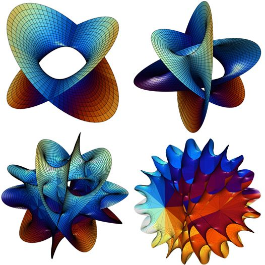

Interesting Topological Spaces in Algebraic Geometry
D. Zack Garza
Intro/Motivation
Space, but Which One?
- You run into a “space” in the wild. Which one is it?
- How many possible spaces could it be?
- How much information is needed to specify our space uniquely?

One Motivation: Physics
Another Application: Data

- Possible to fit data to a high-dimensional manifold
- Makes clustering/grouping easier
- (Here, slice with a hyperplane)

- Extract info about an entire family of objects and how they vary.
- Also useful for outlier detection!
Where to Start
What structure does your space have?
What can you “measure” locally?
How might it vary in ways you can’t measure?
Important question before attempting to classify:
- What does “space” mean?
- Need to pick a category to work in.
- What does “which” mean?
- How to distinguish? Need an equivalence relation!
Q1: Types of Spaces
- Plan: compare classification theorem in topology and algebraic geometry
- Hopefully see some fun spaces along the way!
- But first: address classification and the notion of “sameness”
The Greeks: Conics
Early classification efforts: conic sections.
- Apollonius, 190 BC, Ancient Greeks
Key idea: realize as intersection loci in bigger space
- (Projectivize \(\mathbb{R}^2\).)

- A conic is specified by 6 parameters:
\[\begin{align*} A x^{2}+B x y+C y^{2}+D x+E y+F=0 \\ \\ Q :=\left(\begin{array}{ccc} A & B / 2 & D / 2 \\ B / 2 & C & E / 2 \\ D / 2 & E / 2 & F \end{array}\right), \quad \mathbf{x} = [x, y, 1] \\ \implies \mathbf{x}^t Q \mathbf{x} = 0 \end{align*}\]
| \(\det(Q)\) | Conic |
|---|---|
| \(<0\) | Hyperbola |
| \(=0\) | Parabola |
| \(>0\) | Ellipse |
Each conic is a variety
- Can obtain every conic by "modulating* 6 parameters.
\(\mathbb{R}^6\): too much information: scaling by a nonzero \(\lambda \in \mathbb{R}\) yields the same conic, so reduce the space \[ [A, B, C, D, E, F]\in \mathbb{R}^6 \mapsto [A: B: C: D: E: F] \in \mathbb{RP}^5 .\]
Important point: \(\mathbb{RP}^5\) is a projective variety and a smooth manifold! Tools available:
- Dimension (what does a generic point look like?)
- Tangent and cotangent spaces, differential forms
- Measures, metrics, volumes, integrals
- Intersection theory (Bezout’s Theorem!), subvarieties, curves
- Linear algebra and Combinatorics (enumerative questions)
- We can imagine a moduli space of conics that parameterizes these:
Quadrics
Some Calc III review:

(discriminants), the equation becomes \(\mathbf x^t E \mathbf x = 0\) and we have a classification:

What is the moduli space? It sits inside \(\mathbb{R}^{10}\), possibly \(\mathbb{RP}^{9}\) but not in the literature!
Automorphisms
- Problem: infinitely many points in these moduli spaces correspond to the same “class” of conic
How to address: Klein’s Erlangen program, understand the geometry of a space by understanding its structure-preserving automorphisms.
For topological spaces: a Lie group acting on the space.
Can then “mod out” by the appropriate morphisms to (hopefully) get finitely many equivalence classes
What Does “Space” Mean?
Some Setup
- Algebraic Variety: Irreducible ,zero locus of some family \(f\in \mathbb{k}[x_1, \cdots, x_n]\) in \(\mathbb{A}^n/\mathbb{k}\).
- Equivalently, a locally ringed space \((X, \mathcal{O}_X)\) where \(\mathcal{O}_X\) is a sheaf of finite rational maps to \(\mathbb{k}\).
- Projective Variety: Irreducible zero locus of some family \(f_n \subset \mathbb{k}[x_0, \cdots, x_n]\) in \(\mathbb{P}^n/\mathbb{k}\)
- Admits an embedding into \(\mathbb{P}^\infty/\mathbb{k}\) as a closed subvariety.
- Dimension of a variety: the \(n\) appearing above.
- Topological Manifold: Hausdorff, 2nd Countable, topological space, locally homeomorphic to \(\mathbb{R}^n\).
- Equivalently, a locally ringed space where \(\mathcal{O}_X\) is a sheaf of continuous maps to \(\mathbb{R}^n\).
- Smooth Manifold: Topological manifold with a smooth structure (maximal smooth atlas) with \(C^\infty\) transition functions.
- Equivalently, a locally ringed space where \(\mathcal{O}_X\) is a sheaf of smooth maps to \(\mathbb{R}^n\).
- Algebraic Manifold: A manifold that is also a variety, i.e. cut out by polynomial equations. Example: \(S^n\).
- Manifolds will be compact and without boundary, varieties are (probably) smooth, separated, of finite type.
Impossible Goal
- Pick a category, understand all of the objects (identifying a moduli “space”) and all of the maps.
- Understand all topological spaces up to ???
- Homeomorphism?
- Diffeomorphism?
- Homotopy-Equivalence?
- Cobordism?
- Understand all algebraic and/or projective varieties up to
- Biregular maps?
- Birational maps?
- Locally ringed morphisms?
- Understand all topological spaces up to ???
Classification in Topology
Topological Category
Classifying manifolds up to homeomorphism: stratify “moduli space” of topological manifolds by dimension.
Dimensions 0,1,2,3:
- Smooth = Top. See smooth classification.
- Dimension 4:
- Topologically classified by surgery, but barely, and not smoothly.

- Dimension \(n\geq 5\):
- Uniformly “classified” by surgery, s-cobordism, with a caveat:
- \(\pi_1\) can be any finitely presented group – word problem
- Instead, breaks homotopy type of a fixed manifold up into homeomorphism classes
Smooth Category
Generally expect things to split into more classes.
- Dimension 0: The point (terminal object)
- Dimension 1: \(\mathbb{S}^1, \mathbb{R}^1\)
- Dimension 2: \(\left\langle\mathbb{S}^2, \mathbb{T}^2, \mathbb{RP}^2 \mid \mathbb{S}^2 = 0,\,\,3\mathbb{RP}^2 = \mathbb{RP}^2 + \mathbb{T}^2 \right\rangle\).
- Classified by \(\pi_1\) (orientability and “genus”). Riemann, Poincaré, Klein.

- Dimension 2: closed + orientable \(\implies\) complex
- Uniformization: Holomorphically equivalent to a quotient of one of three spaces/geometries:
- \(\mathbb{CP}^1\), positive curvature (spherical)
- \(\mathbb{C}\), zero curvature (flat, Euclidean)
- \(\mathbb{H}\) (equiv. \(\mathbb{D}^\circ\)), negative curvature (hyperbolic)
- \(\mathbb{CP}^1\), positive curvature (spherical)
- Stratified by genus
- Genus 0: Only \(\mathbb{CP}^1\)
- Genus 1: All of the form \(\mathbb{C}/\Lambda\), with a distinguished point \([0]\), i.e. an elliptic curve.
- Has a topological group structure!
- Genus \(\geq 2\): Complicated?
- Uniformization: Holomorphically equivalent to a quotient of one of three spaces/geometries:
Doesn’t capture holomorphy type completely.
3-manifolds: Thurston’s Geometrization
- Geometric structure: a diffeo \(M\cong \tilde M/\Gamma\) where \(\Gamma\) is a discrete Lie group acting freely/transitively on \(X\) (as in Erlangen program)
- Decompose into pieces with one of 8 geometries:
- Spherical \(\sim S^3\)
- Euclidean \(\sim \mathbb{R}^3\)
- Hyperbolic \(\sim \mathbb{H}^3\)
- \(S^2\times \mathbb{R}\)
- \(\mathbb{H}^2\times \mathbb{R}\)
- \(\widetilde{\mathrm{SL}(2, \mathbb{R})}\)
- “Nil”
- “Sol”
- Proved by Perelman 2003, Ricci flow with surgery.

- 4-manifolds: classified in the topological category by surgery, but not in the smooth category
- Hard! Will examine special cases of Calabi-Yau
- Open part of Poincaré Conjecture.
- Dimension \(\geq 5\): surgery theory, strong relation between diffeomorphic and s-cobordant.
Toward Algebraic Manifolds: Berger’s Classification
Every smooth manifold admits a Riemannian metric, so consider Riemannian manifolds
Here \(H\leq \mathrm{SO}(n)\) is the holonomy group:

- Berger’s classification for smooth Riemannian manifolds, one of 7 possibilities. \[ \tiny \begin{array}{|c|c|c|c|c|} \hline n=\operatorname{dim} M & H & \text { Parallel tensors } & \text { Name } & \text { Curvature } \\ \hline n & \mathrm{SO}(n) & g, \mu & \text {orientable} & \\ \hline 2 m(m \geq 2) & \mathrm{U}(m) & g, \omega & \textbf{Kähler} & \\ \hline 2 m(m \geq 2) & \mathrm{SU}(m) & g, \omega, \Omega & \textbf{Calabi-Yau} & \text {Ricci-flat} \\ \hline 4 m(m \geq 2) & \mathrm{Sp}(m) & g, \omega_{1}, \omega_{2}, \omega_{3}, J_{1}, J_{2}, J_{3} & \textbf{hyper-Kähler} & \text {Ricci-flat} \\ \hline 4 m(m \geq 2) & (\mathrm{Sp}(m) \times \mathrm{Sp}(1)) / \mathbb{Z}_{2} & g, \Upsilon & \text {quaternionic-Kähler} & \text {Einstein} \\ \hline 7 & \mathrm{G}_{2} & g, \varphi, \psi & \mathrm{G}_{2} & \text {Ricci-flat} \\ \hline 8 & \operatorname{Spin}(7) & g, \Phi & \operatorname{Spin}(7) & \text {Ricci-flat} \\ \hline \end{array} \]
Types in bold: amenable to Algebraic Geometry. \(G2\) shows up in Physics!
- Ricci-flat, i.e. Ricci curvature tensor vanishes
- (Measures deviation of volumes of “geodesic balls” from Euclidean balls of the same radius)
Classification in Algebraic Geometry
Enriques-Kodaira Classification
Work over \(\mathbb{C}\) for simplicity, take all dimensions over \(\mathbb{C}\).
Minimal model program: classifying complex projective varieties.
Stratify the “moduli space” of varieties by \(\mathbb{k}-\)dimension.
Dimension 1:
- Smooth Algebraic curves = compact Riemann surfaces, classified by genus
- Roughly known by Riemann: moduli space of smooth projective curves \(\mathcal{M}_g\) is a connected open subset of a projective variety of dimension \(3g-3\).
We’ll come back to these!
- Dimension 2:
Smooth Algebraic Surfaces: Hard. See Enriques classification.
Setting of classical theorem: always 27 lines on a cubic surface!
Example Clebsch surface, satisfies the system \[ \begin{array}{l} x_{0}+x_{1}+x_{2}+x_{3}+x_{4}=0 \\ \\ x_{0}^{3}+x_{1}^{3}+x_{2}^{3}+x_{3}^{3}+x_{4}^{3}=0 \end{array} \]

Interesting Space: Elliptic Curves
- Equivalently, Riemann surfaces with one marked point.
- Equivalently, \(\mathbb{C}/\Lambda\) a lattice, where homothetic lattices (multiplication by \(\lambda \in \mathbb{C}- \{0\}\)) are equivalent.
- Generalize to \(\mathbb{C}^n/\Lambda\) to obtain abelian varieties.


Interesting Space: Moduli of Elliptic Curves
- \(\mathcal{M}_g\): the moduli space of compact Riemann surfaces (curves) of genus \(g\), i.e. elliptic curves.
Dimension 2: Algebraic Surfaces

Definition: Kodaira Dimension
- \(X\) has some canonical sheaf \(\omega_X\), you can take some sheaf cohomology and get a sequence of integers (plurigenera)
\[\begin{align*} P_{\mathbf{n}} (X) &:= h^0(X, \omega_X^{\otimes \mathbf{n}}) \quad n\in \mathbb{Z}^{\geq 0} \\ \\ \implies \kappa(X) &:= \limsup_{\mathbf n \to \infty} {\log P_{\mathbf n}(X) \over \log(\mathbf{n}) } \end{align*}\]
Dimension 2: Algebraic Surfaces
Every such surface has a minimal model of one of 10 types:
\(\kappa = -\infty\) (2 main types)
- Rational: \(\cong \mathbb{CP}^2\)
- Ruled: \(\cong X\) for \(\mathbb{CP}^1 \to X \to C\) a bundle over a curve.
- Called “ruled” because every point is on some \(\mathbb{CP}^1\).
- Type VII
\(\kappa = 0\) (Elliptic-ish, 4 types)
- Enriques (all (quasi)-elliptic fibrations)
- Hyperelliptic
- Taking Albanese embedding (generalizes Jacobian for curves) yields an elliptic fibration
- (i.e. a surface bundle, potentially with singular fibers)
- \(K3\) (Kummer-Kahler-Kodaira) surfaces
- Toric and Abelian Surfaces:
- 2 dimensional abelian varieties (projective algebraic variety + algebraic group structure).
- Compare to 1 dimensional case: all 1d complex torii are algebraic varieties,
- Riemann discovered that most 2d torii are not.
- Kodaira Surfaces
\(\kappa = 1\): Other elliptic surfaces
- Properly quasi-elliptic.
Elliptic fibration, but almost all fibers have a node.
\(\kappa = 2\) (Max possible, “everything else”)
- General type
Interesting Space: Toric Varieties
- Definitions:
Define a complex torus as \(\mathbb{T} = (\mathbb{C}^{\times})^n \subseteq \mathbb{C}^n\)
Can be written as the zero set of some \(f\in \mathbb{C}[x_0, \cdots, x_n]\) in \(\mathbb{C}^{n+1}\).
Generalizes to algebraic groups over a field: \((\mathbb{G}_m)^n\) (analogy: maximal torus/Cartan subalgebra in Lie theory)
Toric variety: \(X\) contains a dense Zariski-open torus \(\mathbb{T}\), where the action of \(\mathbb{T}\) on itself as a group extends to \(X\).
- Flavor: spaces modeled on convex polyhedra
- Examples: bundles over \(\mathbb{CP}^n\).
- Why study:
- Model spaces by rigid geometry, generalize things like Bezier curves
- Some are determined by rigid combinatorial data (“fan”, or polytopes)
- Combinatorial data for constructions in mirror symmetry, e.g. Calabi-Yaus (1/2 of one billion threefolds!)
- Model spaces by rigid geometry, generalize things like Bezier curves
Kahler Manifolds/Varieties
- As complex manifolds:
- A symplectic manifold \((X, \omega)\) with an integrable almost-complex structure \(J\) compatible with \(\omega\).
- Yields an inner product on tangent vectors: \(g(u, v) := \omega(u, Jv)\) (i.e. a metric)

- Examples: all smooth complex projective varieties
- But not all complex manifolds (exception: Stein manifolds)
- Specialize to Calabi-Yaus: compact, Ricci-flat, trivial canonical.
- Calabi’s Conjecture and Yau’s field medal: existence of Ricci-flat Kahlers (Calabi-Yaus)
Trivial canonical \(\implies\) exists a nowhere vanishing top form = top wedge of \(T^* X\) is the trivial line bundle
Calabi-Yau
- Another from Berger’s classification, special case of Kahler

- Applications: Physicists want to study \(G_2\) manifolds (an exceptional Lie group, automorphisms of octonions)
- Part of \(M\)-theory uniting several superstring theories, but no smooth or complex structures.
- Indirect approach: compactify an 11-dimension space, one small \(S^1\) dimension \(\to\) 10 dimensions
- 4 spacetime and 6 “small” Calabi-Yau
- Superstring theory: a bundle over spacetime with fibers equal to Calabi-Yaus.
Roughly, genera of fibers will correspond to families of observed particles.
Calabi-Yaus
- As manifolds:
Ricci-flat: vacuum solutions to (analogs of) Einstein’s equations with zero cosmological constant
Setting for mirror symmetry: the symplectic geometry of a Calabi-Yau is “the same” as the complex geometry of its mirror.
Yau, Fields Medal 1982: There are Ricci flat but non-flat (nontrivial holonomy) projective complex manifolds of dimensions \(\geq 2\).
As varieties: the canonical bundle \(\Lambda^n T^* V\) is trivial
Compact classification for \(\mathbb{C}-\)dimension:
- Dimension 1: 1 type, all elliptic curves (up to homeomorphism)
- Dimension 2: 1 type, \(K3\) surfaces
- Dimension 3: (threefolds) conjectured to be a bounded number, but unknown.
- At least 473,800,776!